2016-11-24 - Nº 82

Editorial
Esta é a Newsletter Nº 82 que se apresenta com o mesmo formato que as anteriores. Se gostar da Newsletter partilhe-a!
Todas as Newsletters encontram-se indexadas no link.
Esta Newsletter tem os seguintes tópicos:
Esta semana a Google anunciou que o seu sistema de tradução suporta atualmente 103 línguas e traduz cerca de 140 mil milhões de palavras por dia. Com este nível de exigência a Google resolveu alterar o seu sistema passando a usar Inteligência Artificial e redes Neuronais para o seu sistema de tradução designando-o de "Google Neural Machine Translation" (GNMT). Num passo mais arrojado foi introduzido o Zero-Shot Translation (ZST) - este sistema vai permitir a tradução entre duas línguas para as quais não existe o sistema ainda não tem uma tradução direta. Ficámos igualmente a saber que a Microsoft está a fazer uma grande aposta nos sistemas quânticos apostando que será possível criar um computador quântico escalável usando o que é chamado de qubit topológico. Cientistas da ESA criaram uma impressora 3D capaz de imprimir camadas aditivas de metal em gravidade-zero. Este passo vem melhorar significativamente a capacidade de recriar peças metálicas que se danifiquem no espaço. A ESA anunciou esta semana que o acidente com a sonda ExoMars Schiaparelli a 19 de Outubro se terá ficado a dever a um problema de saturação - medida máxima - da unidade de medida de inercia (IMU) que ocorreu momentos após a abertura do para-quedas. A IMU mede o rácio de rotação do veiculo. O seu 'output' era na generalidade o que era previsto excepto neste evento, que persistiu por cerca de 1 segundo mais do que o esperado.
Na Newsletter desta semana apresentamos diversos projetos de maker assim como alguns modelos 3D que poderão ser úteis. Saiu a MagPI Nº 52 assim como o Raspberry PI PROJECTS BOOK 2.
 João Alves ([email protected])
João Alves ([email protected])
O conteúdo da Newsletter encontra-se sob a licença  Creative Commons Attribution-NonCommercial-ShareAlike 4.0 International License.
Creative Commons Attribution-NonCommercial-ShareAlike 4.0 International License.
Novidades da Semana ^
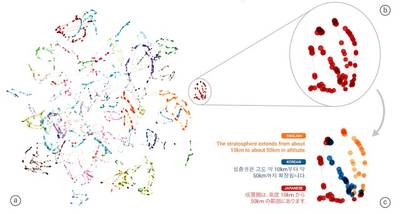
Zero-Shot Translation with Google 's Multilingual Neural Machine Translation System
"In the last 10 years, Google Translate has grown from supporting just a few languages to 103, translating over 140 billion words every day. To make this possible, we needed to build and maintain many different systems in order to translate between any two languages, incurring significant computational cost. With neural networks reforming many fields, we were convinced we could raise the translation quality further, but doing so would mean rethinking the technology behind Google Translate. In September, we announced that Google Translate is switching to a new system called Google Neural Machine Translation (GNMT), an end-to-end learning framework that learns from millions of examples, and provided significant improvements in translation quality. However, while switching to GNMT improved the quality for the languages we tested it on, scaling up to all the 103 supported languages presented a significant challenge." [...]
Microsoft doubles down on quantum computing bet
"Microsoft is doubling down on its commitment to the tantalizing field of quantum computing, making a strong bet that it is possible to create a scalable quantum computer using what is called a topological qubit. Longtime Microsoft executive Todd Holmdahl - who has a history of successfully bringing seemingly magical research projects to life as products - will lead the scientific and engineering effort to create scalable quantum hardware and software." [...]
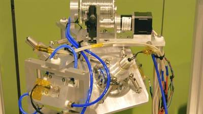
Scientists have developed a zero-gravity metal 3D printer for space
"With the International Space Station 's Additive Manufacturing Facility (AMF) in full swing, the concept of having a 3D printer in space is becoming increasingly familiar. Despite these advances, however, there are still a number of hurdles and challenges that must be met in order for additive manufacturing to be used to its full potential in the cosmos. Metal 3D printing, for instance, remains a difficult task, but one that could prove essential for maintaining equipment and creating parts necessary for journeys to Mars." [...]
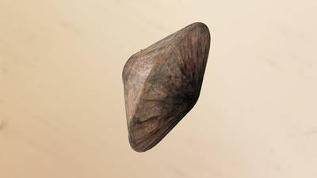
Schiaparelli landing investigation makes progress
"Good progress has been made in investigating the ExoMars Schiaparelli anomaly of 19 October. A large volume of data recovered from the Mars lander shows that the atmospheric entry and associated braking occurred exactly as expected. The parachute deployed normally at an altitude of 12 km and a speed of 1730 km/h. The vehicle’s heatshield, having served its purpose, was released at an altitude of 7.8 km. As Schiaparelli descended under its parachute, its radar Doppler altimeter functioned correctly and the measurements were included in the guidance, navigation and control system. However, saturation – maximum measurement – of the Inertial Measurement Unit (IMU) had occurred shortly after the parachute deployment. The IMU measures the rotation rates of the vehicle. Its output was generally as predicted except for this event, which persisted for about one second – longer than would be expected." [...]
Outras Notícias
- NXP Introduces Industry’s Smallest 8-pin GX Logic Package for Mobile, Portable and IoT Applications
- STMicroelectronics Boosts Trusted Computing with New Advanced Security Modules
Ciência e Tecnologia ^
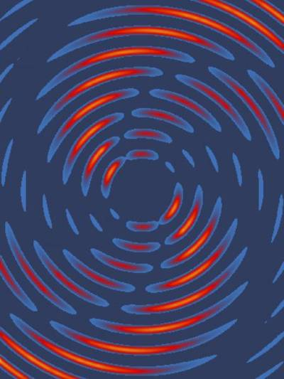
New Clues Emerge in 30-Year-Old Superconductor Mystery
"One of the greatest mysteries of experimental physics is how so-called high-temperature superconducting materials work. Despite their name, high-temperature superconductors materials that carry electrical current with no resistance operate at chilly temperatures less than minus 135 degrees Celsius. They can be used to make superefficient power cables, medical MRIs, particle accelerators, and other devices. Cracking the mystery of how these materials work could lead to superconducting devices that operate at room temperatures and could revolutionize electrical devices, including laptops and phones." [...]
CertiKOS: A breakthrough toward hacker-resistant operating systems
"A team of Yale researchers has unveiled CertiKOS, the world 's first operating system that runs on multi-core processors and shields against cyber attacks, a milestone that the scientists say could lead to a new generation of reliable and secure systems software. Led by Zhong Shao, professor of computer science at Yale, the researchers developed an operating system that incorporates formal verification to ensure that a program performs precisely as its designers intended a safeguard that could prevent the hacking of anything from home appliances and Internet of Things (IoT) devices to self-driving cars and digital currency. Their paper on CertiKOS was presented at the 12th USENIX Symposium on Operating Systems Design and Implementation held Nov. 2-4 in Savannah, Ga." [...]
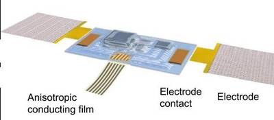
This tiny electronic device applied to the skin can pick up heart and speech sounds
"Researchers from the University of Colorado Boulder and Northwestern University have developed a tiny, soft, wearable acoustic sensor that measures vibrations in the human body and can be used to monitor human heart health and recognize spoken words. The stretchable Band-aid-like device attaches to the skin on nearly any surface of the body, using 'epidermal electronics' to capture sound signals from the body. It 's a sort of tiny, wearable stethoscope. As described in an open-access paper published Nov. 16 in Science Advances, a sister journal of Science, it can detect things like heart murmurs in cardiac patients and lung problems, and can monitor ventricular assist devices. It can also be used to pick up speech sounds (for automated speech recognition or controlling video games and other machines), and even movements in gastrointestinal tracts." [...]
A new standard in robotics
"On the wall of Aaron Dollar 's office is a poster for R.U.R. (Rossum 's Universal Robots), the 1920 Czech play that gave us the word 'robot.' The story ends with the nominal robots seizing control of the factory of their origin and then wiping out nearly all of humanity. Dollar, fortunately, has something more cheerful in mind for the future of human-robot relations. He sees them as helpers in our daily lives performing tasks like setting the table or assisting with the assembly of your new bookcase. But getting to the point where robots can work in the unstructured environment of our homes (as opposed to industrial settings) would take a major technological leap and a massive coordination of efforts from roboticists around the globe. The living room has been called the last frontier for robots but first, the robotics community needs some standards that everyone can agree on." [...]
Miniature WiFi device developed by Stanford engineers supplies missing link for the Internet of Things
"Futurists and technology prognosticators have been known to make starry-eyed projections about the so-called Internet of Things. It 's a vision of a world where everything from implantable biosensors and wearable devices to smart cars and smart home sensors confers and collaborates wirelessly to make the world a better and more interconnected place. To date, this remains largely a dream. To become reality, the Internet of Things will require a new class of tiny, energy-efficient WiFi radios to pass commands to and from the network to a myriad of devices." [...]
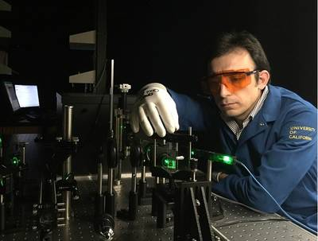
UCR Researchers Discover New Method to Dissipate Heat in Electronic Devices
"Controlling the flow of heat through semiconductor materials is an important challenge in developing smaller and faster computer chips, high-performance solar panels, and better lasers and biomedical devices. For the first time, an international team of scientists led by a researcher at the University of California, Riverside has modified the energy spectrum of acoustic phonons elemental excitations, also referred to as quasi-particles, that spread heat through crystalline materials like a wave by confining them to nanometer-scale semiconductor structures. The results have important implications in the thermal management of electronic devices." [...]
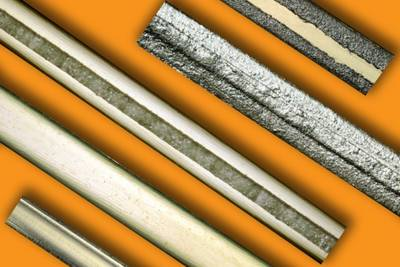
Nylon fibers made to flex like muscles
"The new nylon-based system, by contrast, uses cheap material and a simple manufacturing process, and demonstrates very good cycling longevity. It all comes down to how the nylon fibers are shaped. Some polymer fiber materials, including highly oriented nylon, have an unusual property: When heated, 'they shrink in length but expand in diameter,' Mirvakili says, and this property has been harnessed to make some linear actuator devices. But to turn that linear shrinking motion into bending typically requires a mechanism such as a pulley and a takeup reel, adding extra size, complexity, and expense. The MIT team 's advance was to directly harness the motion without requiring extra mechanical parts." [...]
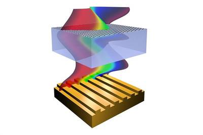
Designer materials create miniature computer circuits
"Scientists at The University of Manchester have discovered a new method of creating optoelectronic circuits using graphene and other 2D materials that are much smaller than their current counterparts. Optoelectronics, the technology that uses pulses of light rather than traditional electrical signals, is vital for telecommunication networks. Modulators are important in optoelectronic circuits as they control the signals passed through optoelectronic devices. Previous attempts to create hybrid modulators incorporating graphene have yielded promising although limited results. Writing in Nature Communications, researchers led by Professor Sasha Grigorenko have shown it is possible to combine graphene, its sister material boron nitride and a nanoscale gold grating to create a new class of optical modulator. Graphene is the world 's first two-dimensional material, just one atom thick yet 200 times stronger than steel, more conductive than copper and impermeable to water." [...]
Modelos 3D ^
Com a disponibilidade de ferramentas que permitem dar azo a nossa imaginação na criação de peças 3D e espaços como o thingiverse para as publicar, esta rubrica apresenta alguns modelos selecionados que poderão ser úteis.
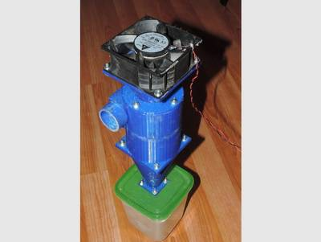
12V mini cyclone vacuum cleaner
"This is a cyclone vacuum cleaner. It's work with a 2.5A, 12V computer fan. For best aspiration you can change fan. I made this for work with my Proxxon TG125 disk sander. For best safety, you can add at the top of fan a finger guard." [...]
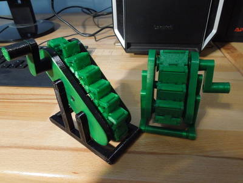
Customizable Escalator v2
"The chassis is now a lot less bulky and consists of multiple parts, the pulleys move more easily now. Before printing everything it is best to print a couple chain links to see if they work. When using multiple links per step the chain link with the socket on top can be used to connect both the horizontal and vertical parts of one step, the link without the socket can be used in between. The pulley should be big enough that the chain with the mounted steps can bend around it, so it is best to print one of the pulleys next to try that out. The pulleys with the mounted chain are placed on the axes in a way that the hole in the chassis aligns with the square hole of one of the pulleys. Make sure the pulleys rotate easily. You will need 12 pins to assemble the chassis and mount the handle and stands. Inserting the pins can be quite tough, I did it carefully with pliers and a hammer. The crank can be joined with the handle and mounted trough the hole of the chassis with pins. The pictures should give a good overview how the parts connect together." [...]
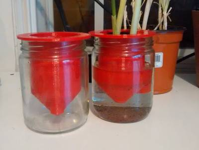
Jar Planter Openscad
"Self Watering Jar Planter. The tube on the side is there to be able to refill the jar without removing the plant. Inspired by Light24bulbs. http://www.thingiverse.com/thing:1796808 Printed with PETG" [...]
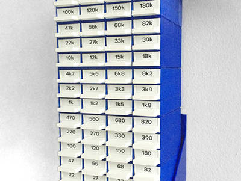
Resistor Storage / Sorter with Wall Mount
"stylesuxx used his Customizable Storage Box with Drawers to create this great Resistor Storage (Resistor Sorter) thing. I wanted to screw a stack of resistor boxes to my shop's wall so I created a very, very simple wall mount. Please note that the mount's base plate is intentionally tilted upwards so the drawers will not slide out by themselves or when lightly bumped. The *.skp file for SketchUp is included so you can easily apply changes. PS A blog post about the 3D printed resistor storage box with wall mount with some additional pieces of information on printing, warping, labeling, and the wall mount." [...]
Documentação ^
A documentação é parte essencial do processo de aprendizagem e a Internet além de artigos interessantes de explorar também tem alguma documentação em formato PDF interessante de ler. Todos os links aqui apresentados são para conteúdo disponibilizado livremente pelo editor do livro.
Raspberry PI PROJECTS BOOK 2
"The Raspberry Pi is the best-selling British computer of all time, says Managing Editor Russell Barnes. "It's known the world over for making incredible things, from robots to mirrors and even art. It's also helping to revolutionise computing.". You can learn all about the world's favourite credit card-sized computer in this one book: 200 pages of Raspberry Pi; Learn how easy it is to use your Raspberry Pi; Find out about amazing community creations; Follow expert guides to make your first project; Read definitive reviews of add-ons and accessories" [...]
The MagPI 52
"Get creative with our festive projects in the Christmas 2016 issue of the official Raspberry Pi magazine. Merry Christmas Makes - Build your own decorations and even make one out of the magazine cover; Get started with electronics - Learn to use a breadboard and get to grips with the GPIO pins; Build a DIY alarm clock - Wake up at dawn with our brilliant clock project; Give your robot brains! - Add sensors and artificial intelligence to your Pi robot. And much, much more!" [...]
Projetos Maker ^
Diversos Projetos interessantes.
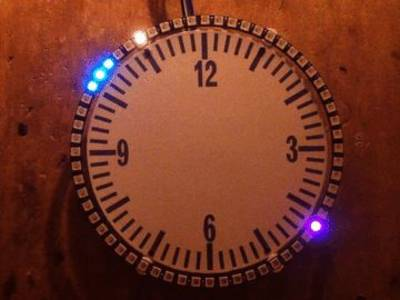
eDOTcore: Simple Neopixel ring clock
"Simple Neopixel Ring Clock" [...]
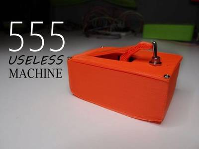
555 Useless Machine
"Almost every project that I made in my life use arduino or just atmegas, but on last electronic lesson in my school I found small integrated circuit called 555. I have heard about it before but I was thinking that microcontrollers are better. I read something about 555 in the internet and I found that this is the most popular integreted circuit in the world! And I have never used it :( I thought that it can be nice to make something completely without any programing and just with basic electronic components. I started to think what can I do with 555, but couldn't find anything intresting. Than I talked with my friend about useless machines and I thought that I can make useless machine with 555, servo, some resistors and switch. And it will be very simple and I don't need microcontroller to make it! I order some 555 on the internet and thought that I can test my design in some simulator. In school we are using electrosym but it's very old and I don't like it. But I read about circuits.io and I thought I will try it, after testing everything I can say that this program is pretty good to start with, it's simple to use and very intuitive. Additionaly it looks soooo good like every autodesk's program :)" [...]
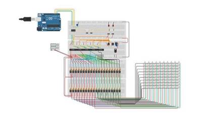
10x10 RGB Led Matrix
"I've build a 10x10 RGB Led Matrix Simulator on circuits.io because I've allready build a 10x10 RGB Matrix in real life. This one is for testing code and not damaging anything on the real one. So basically this Matrix works with 5 Shift register to control 100(300) leds by only 3 pins." [...]
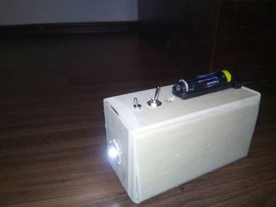
A Little Joule Theif Flashlight Charger for Smartphones
"This idea appeared to me by coincidence and I thought I've ever done no more Instructable and that's why I have this idea Documented have fun and reverse engineering or reading :)" [...]
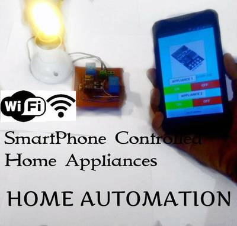
Home Automation With ESP8266 WiFi Without Using Blynk!
"Firstly, I want to THANK everyone for making me a winner in Automation Contest 2016 for this INSTRUCTABLE. So, as I promised you, here's the instructable for controlling home appliances with ESP8266 WiFi module. In order to stay on the couch and control all electrical appliance with just a TV remote, I created an instructable for that and now it's time to upgrade to WiFi. Now you'll be able to control everything with your smartphone. Sounds complicated!!! But very easy to make!!!" [...]
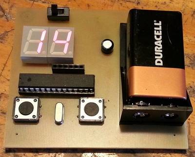
7 Segment Up/Down Counter
"The method I use to make PC Boards, is called the "Heat Transfer" method, using Press-n-Peel transfer paper. After applying the Press-n-Peel to a blank PC Board, I use a standard A4 laminator to transfer the toner from the Press-n-Peel to the PC Board. With the laminator set to the 125ug temperature setting, passing the PC Board trough 10 times gives me the best results." [...]
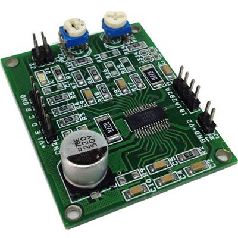
2.5A Bipolar Stepper Motor Driver using A3979
"The tiny board designed using A3979 IC from ALLEGRO which is complete micro stepping driver with built in translator. The translator is the key to the easy implementation of the A3979. It allows the simple input of one pulse on the STEP pin to drive the motor one micro step, which can be either a full step, half, quarter, or sixteenth, depending on the setting of the MS1 and MS2 logic inputs. There are no phase-sequence tables, high-frequency control lines, or complex interfaces to program. The A3979 interface is an ideal fit for applications where a complex microprocessor is unavailable or is overburdened." [...]
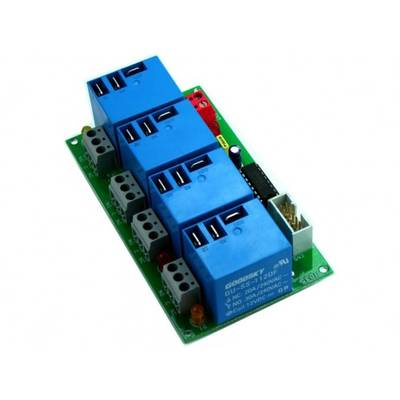
4 Channel Large Current Relay Board
"4-Channel Relay Board is a simple and convenient way to interface 4 relays for switching application in your project. The project has large Relay which can switch current up to 20Amps." [...]
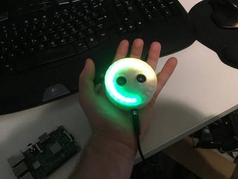
Parking Buddy - Arduino Neopixel IOT Parking Assist
"Have you ever wanted a high tech parking assistant? Its time to put away your hanging tennis ball and get into the 21st century with an electronic parking buddy. This project uses an ultrasonic sensor and a nexopixel ring to light up and complete the ring as your get closer to the sensor.. When you are at your maximum distance (closeness) the ring will be full, (fades from green to yellow.. If you get to close it will flash red to warn you your in panic mode!" [...]
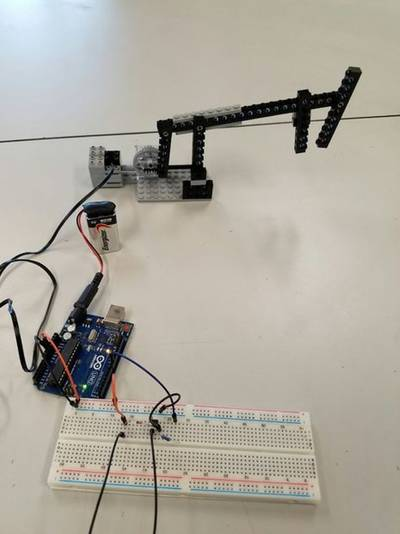
Hacking the Lego Mindstorms RCX With an Arduino
"I recently found a few boxes of an old LEGO Mindstorms RCX set and then spent a frustrating 2 weeks trying to get all the software and hardware to work together. Main problem was that the USB IR tower that they made to speak to the RCX control block would only run under a 32 bit computer. After setting up a Virtual Machine on my laptop and running Windows XP I managed to get the tower working but it would repeatedly drop the connection to the block during the firmware upload. Eventually I gave up and realised that everything I might want to do I should be able to do with my Arduino plus I shouldn't have to learn any more weird and obsolete programming languages on top." [...]
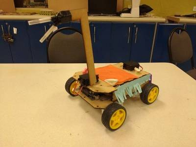
Mario Kart Robot
"This project was made by students of the ITESM campus Chihuahua with the purpose of participating in a competition called maker fest 2016. Below we are going to show you how to make this robot." [...]
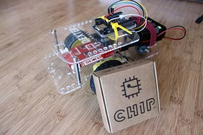
Make a CHIP Robot
"In this tutorial we 'll show you the easiest way to make a CHIP robot. Starting with C.H.I.P. is very simple, and making a CHIP robot can be done easily with the GoPiGo Robot kit. In this tutorial we will walk you through how to make a CHIP robot." [...]
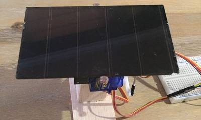
Arduino Solar Tracker (Single or Dual Axis)
"If you 've installed solar panels on a camper van to provide you with electricity on your camping trip or at home to supplement your electricity usage or take your home completely off grid then you probably know that the panels work the best when they are aligned directly towards the sun. This sounds simple enough, except that the sun moves throughout the day. This is why there are now a number of different mechanisms which work on a range of principles with the purpose of aligning your panel or array of panels directly towards the sun, they are called solar trackers. There are two principle types of trackers, single and duel axis trackers. Single axis trackers are adjusted every month or so account for seasonal changes in the suns position, the single axis is then used to track the daily movement of the sun across the sky. Duel axis trackers eliminate the need for monthly adjustment by using one axis to track the suns daily movement and another axis to track the seasonal movement. A single axis solar tracker improves solar output by around 25% and a dual axis tracker by around 40% according to this article on Altestore." [...]
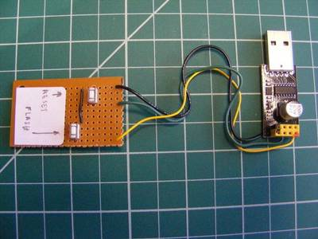
Cheap and Easy ESP8266-01 Programming Jig - use with Arduino IDE
"What it does - Makes programming ESP8266-01 module with Arduino IDE easy. Details - This programming jig is easy to construct using a USB to ESP8266 Serial Development Adapter ESP01 board (<$5 on Ebay), 2 tactile buttons, a perf board, and a bit of hookup wire. No additional FTDI cable or adapter required! The ESP8266-01 module plugs directly into Development Adapter board, which in turn plugs into computer USB port. When programming ESP8266-01 using Arduino IDE, you just need to toggle the reset and flash buttons in a particular sequence as described later." [...]
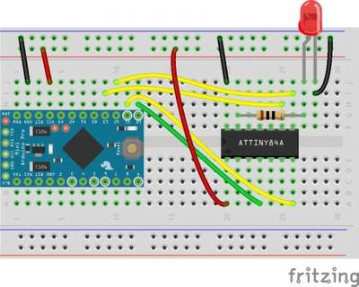
T³: Programming an ATtiny84A from Arduino
"I 'm currently working on a project that requires a cheap, low-power microcontroller that 's programmable through Arduino and has a few more pins than the ATtiny85. That 's where I found the ATtiny84A. It has many of the same features as the ATtiny85, but has 12 I/O pins instead of six. As it turns out, a lot of work has already been done to program ATtiny microcontrollers from Arduino, which makes this pretty easy. To start, connect an Arduino (UNO, etc.) to the ATtiny84A using the Arduino as ISP configuration. I 'll be using a 3.3V Arduino Pro Mini to keep everything nice and tidy on a breadboard." [...]
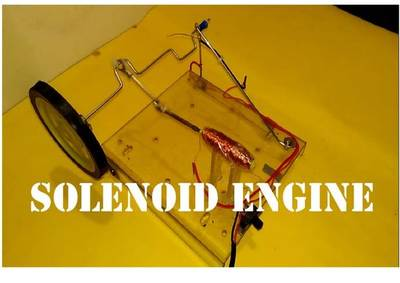
How to make Solenoid Engine
"Hi friends. this time i will show you how to make a simple solenoid engine. It is very fascinating to see how physics works, with this project we will see how magnetism works to rotate a wheel, here linear movement of solenoid is convert into circular motion." [...]
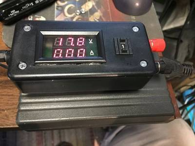
Led Tester / Current Limiter
"I use LED's in plenty of projects and art pieces. I've been caught a couple of times by a bad led so I like to test them first... Now I know there are plenty of ways to test LEDs. Well, here's one more. It also good for testing small electronic devices of unknown condition. It's essentially a current limiter with a digital panel meter." [...]
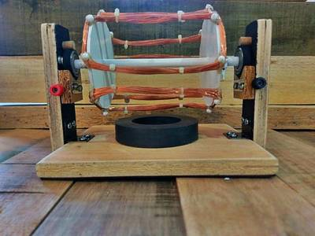
Make an Electric Motor
"This electric motor is made in reference of Roobert33's "How to make an electric motor homemade" YouTube video. This was made for a physics coursework. Although the video has already briefly explained how it works and made, here's my take. Or rather an improved version." [...]
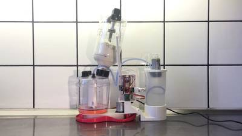
Sourbot
"The goal of this project is to keep a sourdough starter alive by feeding it with flour and water over time. The feeding may be done scheduled, automated with sensors or manually. All possible thanks to this sour robot " [...]
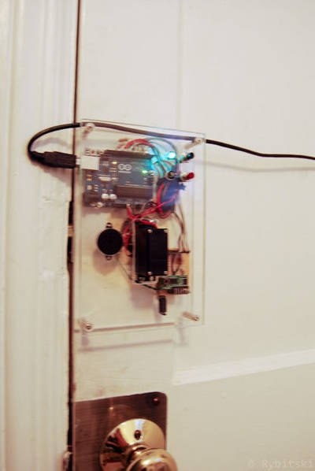
Keyfob Deadbolt With Arduino Uno R3 and RF Transmitter and Receiver
"The key to my apartment never worked quite right because it is a copy of a copy of a copy. I am fairly certain that the dead bolt is original to the building and the property manager seems to have lost the original key years ago. As a result unlocking the door was always a pain. Changing the lock wasn't an option, but eliminating the need to use a key was." [...]
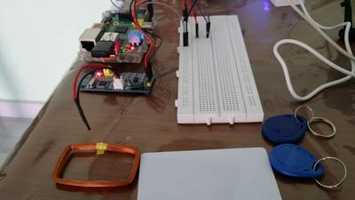
RFID Parking Solution using Raspberry Pi
"Sri Lanka has a lot of Parking Lots Managed by RDA (Road Development Authority) but almost all use paper receipts to maintain Timings of Parked Vehicles. This process is error prone and difficult to keep on days where vehicle come and go out frequently. This motivated me to do a small PoC on a Low Cost RFID based Parking Solution. I had a HZ-1050 RFID Reader lying around in my Hack Space and 1 RFID Card with 2 RFID Tags so I decided to use those." [...]
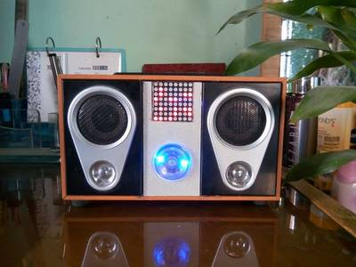
Desk Amplifier with Audio Visualization, Binary Clock & FM Receiver
"I like amplifiers and today, I will share my low power desk amplifier I made recently. The amplifier I designed has some interesting features. It has an integrated binary clock and can give time and date and it can visualize audio often called audio spectrum analyzer. You can use it as FM receiver or MP3 player. If you like my clock amplifier then follow the steps below to make your own copy." [...]
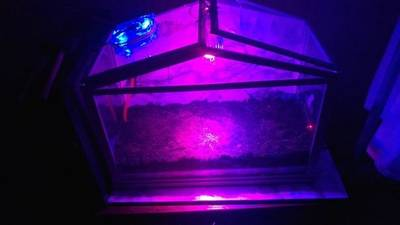
IOT Farm + Timelapse Cayenne Arduino/Raspberry
"It's the second project using my automated Farm but this time everything will be control by the platform cayenne so it will be a lot easier. Also i added a raspberry pi in order to do a timelapse" [...]
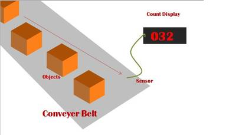
A Bidirectional Visitor Counter using AVR ATmega16
"This counter system built using AVR ATmega16 can be used to count objects passing in a converyer belt or peoples entering of leaving a room. It is bidirectional, that means if a person enter the room, it will increment the count and if a person leaves the room then it will decrement the counter. The count is displayed in a 3 digit seven segment display. Object or visitor is sensed using IR sensors. On one side we place an IR led that emits invisible IR rays. These rays are incident on ir sensors placed on the opposite side. When IR rays are freely falling on the sensors, the output of the sensor is LOW (that is close to 0v) and when any obstacle comes between the IR LEDs and the sensors, the rays cannot reach the sensor, thus making the output of IR sensor go HIGH(close to 5v)." [...]
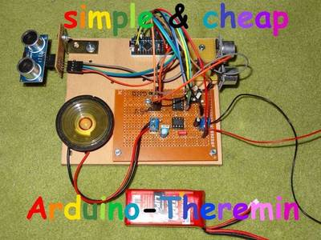
Arduino Theremin With Variable Pitch and Volume
"My intention was to build an easy and cheap theremin, using the arduino. I've already finished a classic variant (the model 144; www.theremin.us/144/144.htm; https://www.youtube.com/watch?v=DhvwaoKn7CY&t=4s) but now I wanted something cheaper. The theremin was invented by Leon Theremin in 1919. Classically a theremin consists if two oscillating circuits, one fixed and one variable. The variation is achieved by moving the hand in front of an antenna. When those two slightly different oscillations are being mixed you get beats. The frequency of those beats is the difference between the frequencies of the two oscillations. This signal can be heard." [...]
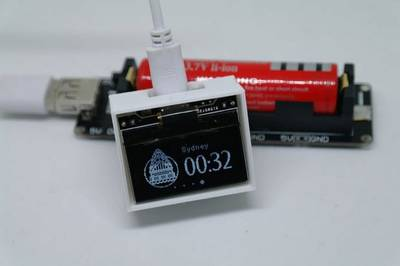
Make a WIFI Word Clock
"Almost all the OLED look like the same. I always want to make it look more compact. So I made this tiny 1.3 OLED. I call it "X-OLED". Then I develop a project called "X-project". All the shields or control boards' shape should be limited as X-OLED's shape." [...]
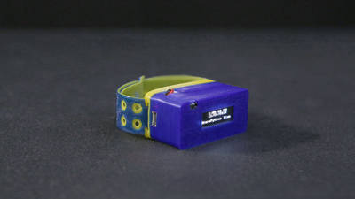
MicroPython OLED Watch
"In this project we 'll show you how to make a watch using an Adafruit Feather M0, an RTC module and an OLED display. This uses microPython, which is an interpreted language that runs on small embedded boards. Be sure to check out Tony 's MicroPython playlist to learn how you can write clean and simple Python code to control hardware. " [...]
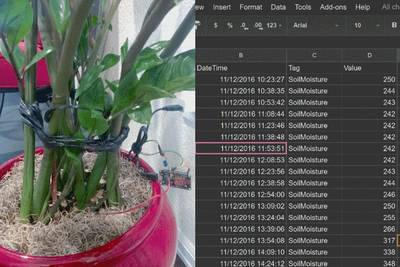
How to post data to google sheets using ESP8266
"In the past couple years, the ESP8266 platform has flourished dramatically and emerged as one of the most popular hardware tools among electronics hobbyists and IoT enthusiasts. Packed with a 32-bit RISC CPU running at 80 MHz, a fully integrated WiFi radio with TCP/IP protocol stack, serial peripherals (I2C, SPI, and UART), an ADC channel, and general purpose I/O pins, the ESP8266 is the most integrated and affordable WiFi solution available in the current IoT market space. An ESP8266 hardware, like NodeMCU and ESP-01, can directly interface with sensors using its peripherals and upload the sensor measurements to a local or a remote web server via internet. Right now, there are already quite a bit of cloud IoT platforms (ThingSpeak, thinger.io, TESPA.io, Xively, the list is getting bigger everyday) that provides APIs and tools to allow the ESP8266 users to directly upload their sensor readings online for real-time visualization and global access. If you are a regular user of Google Drive, like me, you would find a Google sheet more approachable than all those IoT cloud platforms. In this tutorial, I will describe a method of connecting the ESP8266 device directly to a Google sheet for storing the sensor data without using any third party plugin. For illustration, I am using a NodeMCU board that reads the analog output from a soil moisture sensor inserted into one my flower pots and directly connects to a spreadsheet on my Google Drive for storing the data." [...]
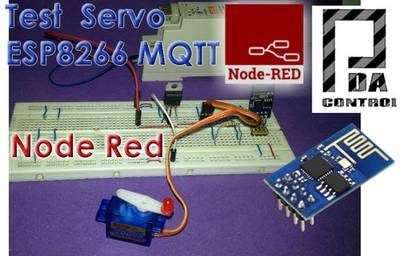
ESP8266 Control Servo Node-RED MQTT (Mosquitto) IoT
"This time the integration of ESP8266 and the Node-RED platform has been made integrating an actuator in this case a servo controlled by PWM with rotation from 0 to 180 degrees. From an HMI or SCADA Web creator on Node-Red-Dashboard using as base the MQTT Protocol and pubsubclient library converting the ESP8266 into MQTT Client." [...]
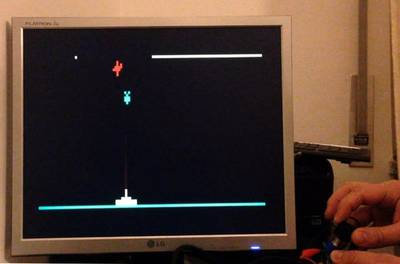
VGA Bomber With Arduino Uno
"I have done different Arduino games working on VGA monitors, but I haven't done yet an Instructables of my first one. Now, here it is: the name is "Arduino Bomber" and, as usual, it works by means of a bare Arduino Uno and few other components. As in my previous Instructables, the goal is to avoid any special shield or supporting IC. The only needed components are one button, a potenziometer, few resistors and a DSUB15 connector. You can see it running on this video. I used Arduino IDE 1.6.4. and the VGAx library done by Smaffer and publish on GitHub here. This library allows to use four color with a resolution of 120 x 60 pixels, not many but enough for this retro-game." [...]
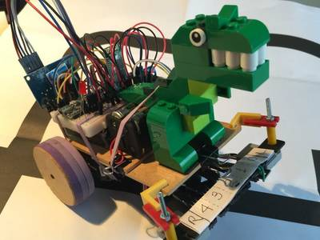
Maze Solver Robot, using Artificial Intelligence with Ard...
"This tutorial was developed upon my last project: Line Follower Robot - PID Control - Android Setup. Once you have a robot with line following capabilities, the next natural step is to give him some degree of intelligence. So, our dear "Rex, the Robot" will try now finding how to scape from a "labyrinth" on a shortest and fastest way (by the way, he hates the Minotaurus ;-). For starting, what is the difference between Maze and Labyrinth? According http://www.labyrinthos.net, in the English-speaking world it is often considered that to be qualified as a maze, a design must have choices in the pathway. Clearly, this will include many of the modern installations in entertainment parks and tourist attractions, including our 2D maze here. Popular consensus also indicates that labyrinths have one pathway that leads inexorably from the entrance to the goal, albeit often by the most complex and winding of routes." [...]
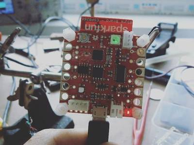
Wi-Fi jamming device based on ESP8266
"Before you make this jammer, take a look at the local law enforcement before use and also use this device at your own risk !!! After I did some research about the Espressif microcontroller ESP8266, I found that Espressif has written a 'wifi_send_pkt_freedom()' function that just sends out whatever packet I 'd like to the network. It also turns out that the ESP8266 will enter monitor mode, where it listens to all WiFi traffic regardless of the MAC address that it 's directed toward." [...]
Emulate a WeMo device with ESP8266
"My daughters love to talk to (or with) my Amazon Dot in their funny English: 'Alexa, hello!', 'Alexa, li-on!' (actually 'light on'). It 's so easy to use it to switch on/off things at home using the fauxmo python script by Maker Musings. In his post about Amazon Echo and Home Automation more than a year ago he explains how he reverse-engineered the protocol of the WeMo switches that Alexa supports. I also have a server running the fauxmo script with an MQTT handler to control some of the Sonoffs I have at home, but this morning I woke up thinking: why should I use an external script to control my devices if I can code it in the firmware?" [...]
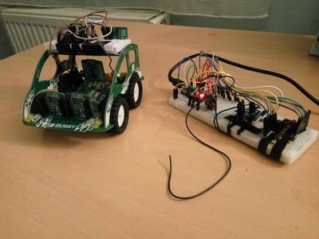
Rf controlled buggy
"Simple rc vehicle control system that uses 433MHz RF modules for communication between arduino's. This can be applied on any vehicle with differential drive setup that has pwm controlled dc motors. Vehicle in this project has an built in H-bridge that enables both clockwise and counterclockwise rotation of the dc motors without using ac current in the circuit. It is recommended to solder ~20cm long copper wire to the antenna hole in the XY-FST transmitter to significantly boost the range of the transmission, insulation does not need to be stripped." [...]
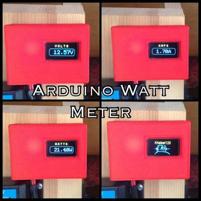
3D Printed Arduino OLED Watt Meter
"Have you ever wanted to know how many watts or how much current an item uses or even its operating voltage? This simple and easy project can provide you with that crucial information while keeping costs under $7. I primarily designed this to be used in conjunction with common solar charge controllers, that don't have any indication of load power draw. Since making it, I realized it would also be useful on my homemade bench power supply. The fact that you can program a small bitmap image into it is just a bonus and makes you feel great every time you look at it." [...]
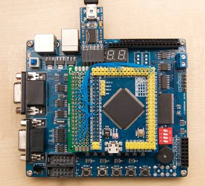
A fast µC to FPGA bus
"For reasons which will become clear later, I 'd like to exchange data quickly between an STM32 µC and an FPGA. SPI is a serial bus, which can be pushed to several dozen Mbit/sec - but what if we want more? Suppose we could 'map' the FPGA into the STM32 's memory space and then simply read and write bytes? No handshaking, no interrupts, no polling. One advantage of such an approach, is that it could transfer data really quickly through DMA - without tying up the µC 's CPU at all. As it so happens, most STM32 chips with 100 pins or more include a 'Flexible Static Memory Controller' which can do just that. And in an earlier weblog post I already used DMA to pump data into the (built-in) D/A converter at 2.7 million samples per second." [...]
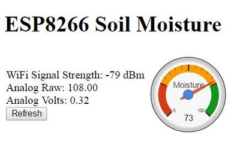
ESP8266 Soil Moisture Sensor With Arduino IDE
"The ESP8266 is a great piece of electronics. If you like Arduino, you'll also like the ESP8266. They are small, only require 3.3 volts and best of all they have full WiFi capabilities. The ESP8266 is perfect if you want to web enable just about any device. That's right. IoT. It's all the rage. With new IoT and ESP8266 development platforms emerging rapidly, where do I get started? Already familiar with Arduino devices I decided to use the Arduino IDE to program my ESP8266. Being my first ESP8266 project I wanted to create a simple device that would perform a real world task. So, I decided to build a web enabled moisture sensor to let me know when my house plants need water. My house plants will be part of the Internet of Things!" [...]
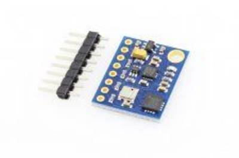
GY 89 Gyro Accelerometer Sensor Module for Multiwii Quadcopter
"This is my first Instructable, so please bear with me. So like most people interested in quadcopters i wanted to make one cheaply. Well after a little bit of time and import from across the world i was able to do that. I used the Multiwii 2.4 program running on an Arduino Uno. The thing I had the hardest time with was the IMU. I bought the GY-521 (MPU6050) ACC/GYRO first and realized for my particular project i needed a better IMU. I went onto eBay and looked up a 10DOF IMU and found the cheapest one for the GY-89. This board has LSM303D,L3GD20 and BMP180. The problem is I wasn't aware the Multiwii platform didn't have code written for this. I looked everywhere, and couldn't figure it out. I attempted writing code for it(based on my extremely limited knowledge) and failed miserably. I finally came across this." [...]
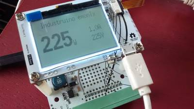
PROTO power meter - Measuring AC power with the Industruino PROTO
"This project shows how to build an Arduino based electricity consumption monitor using the Industruino PROTO platform. We can use it to measure the power consumption of an AC appliance such as a water cooker, a TV, a laptop charger, anything you plug into a wall socket. Alternatively you can also use it in your electricity cabinet to measure the power consumption in your entire house (at least one phase). The challenge is to measure an alternating current (AC) of a relatively high voltage (220-240V) with our direct current 5V Arduino microcontroller. This may seem dangerous, but we will use a non-invasive Current Transformer (CT), so our Arduino remains galvanically isolated from the high voltage AC." [...]
DS18B20 (digital temperature sensor) and Arduino
"Hello, everyone ! Today I'm going to show you how to use DS18B20 digital temperature sensor with Arduino, so you can measure the temperature of the air, liquids like water and the temperature of the ground." [...]
Robô da Alegria ("Joy Robot")
""Robô da Alegria" is an initiative of engineers, software developers, and technology lovers, focused in sharing knowledge and promoting technological innovation to assist NGOs that carry out charitable work in children's hospitals. The project aims to design a remotely operated robot using open hardware and software technologies. The robot will be able to interact with children using arm movements, face expressions, voice, images, and games." [...]
Arduino Spectrum Analyzer on a 10x10 RGB LED-Matrix
"In this Instructables I am going to show you how to create a spectrum analyzer powered by an Arduino nano. A spectrum analyzer basically analyzes the intensity of different frequencies in a song. To display those values we are going to use a 10x10 RGB LED-Matrix. Every time one of the columns reaches the top of the matrix the hue value of the colors increases and the matrix looks different." [...]
PSoC 4: Bluetooth Controlled LED Chandelier
"We have this old plastic chandelier for more than a decade, which was originally for incandescent lamps. The oldie used to consume up to 500 watts worth of power, therefore we didn’t use it very often. I had few meters of White LED strip laying around. So, I decided to upgrade the chandelier. Since the LED stripe requires 12 Volts and 1.2 Amperes of current/meter length to drive, a good option is to use Desktop computers ATX Power Supply which was also laying around in the junks." [...]
That's all Folks!